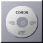
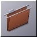
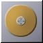
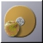

Filer Icons for Devices
These are for general use, but primarily in GWorkspace (File manager)
|  | FileIcon_CD_Tile.jpg Author: Andrew Lindesay. |
 |
FileIcon_CD_Apple_Tile.jpg Author: Andrew Lindesay. |
| FileIcon_Root_Apple_Tile.jpg Author: Andrew Lindesay. | |
| FileIcon_Floppy_Tile.jpg Author: Andrew Lindesay. | |
|  | FileIcon_Directory_Tile.jpg Author: Andrew Lindesay. |
| FileIcon_NFS_SGI_Tile.jpg Author: Andrew Lindesay. | |
|  | FileIcon_HardDisk_FileIcon_Tile.jpg Author: Andrew Lindesay. |
|  | FileIcon_HardDisk_Apple_Tile.jpg Author: Andrew Lindesay. |
| FileIcon_Root_PC_Tile.jpg Author: Andrew Lindesay. | |
| FileIcon_Root_SGI_Tile.jpg Author: Andrew Lindesay. | |
| FileIcon_Root_Sparc_Tile.jpg Author: Andrew Lindesay. |